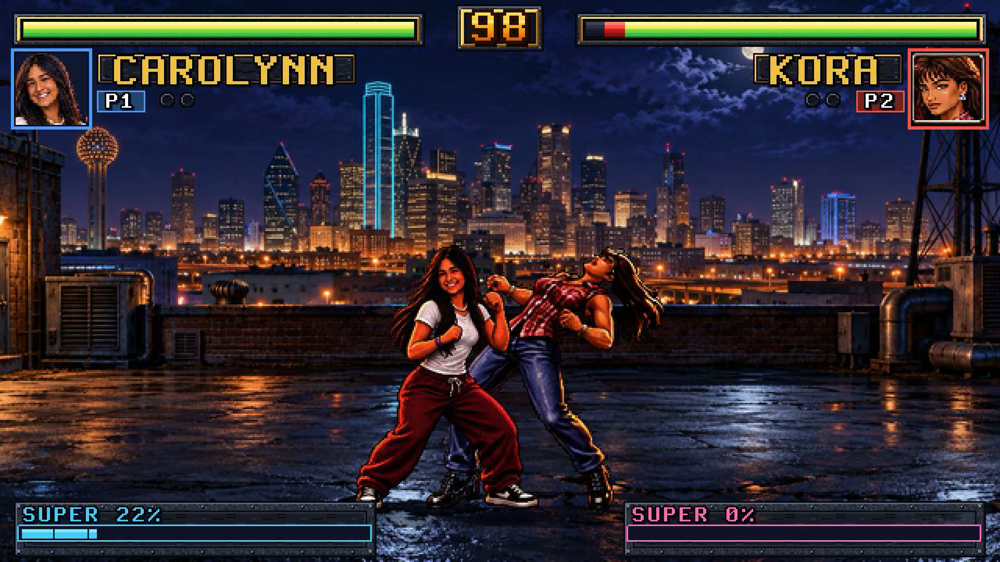
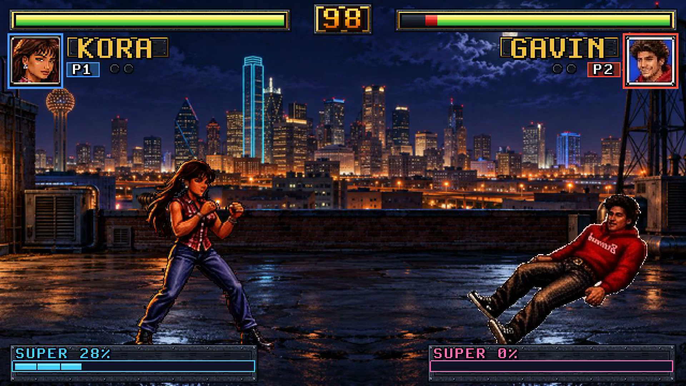

01 / SIMULATION
Fixed-step combat
A 60-step-per-second integer simulation tracks match phases, fighter states, collision, projectiles, hitstop, and events. Presentation reads the result.
A 16-bit-inspired fighting game where family and friends enter the arena. Built in Godot with a custom combat simulation, a nine-fighter roster, and plenty of arcade attitude.
Forty-five seconds of arcade energy, built around actual gameplay captures.
Gameplay shown is a controlled exhibition captured from the Godot game, not a recording of human matches. Trailer credits and notices · Open video directly
Combos, special moves, stages, and signature arcade spectacle.


Behind the pixel-art spectacle is a system designed to keep combat, input, and presentation in their own lanes.
A 60-step-per-second integer simulation tracks match phases, fighter states, collision, projectiles, hitstop, and events. Presentation reads the result.
A serializable input history maps directions relative to fighter facing and recognizes motions, button transitions, and charge timing.
Fighter and move data, sprite frames, stage artwork, sound cues, and presentation screens come together around a shared match simulation.
This is a curated project showcase. The full game source and distribution remain private; the video is not a playable build.